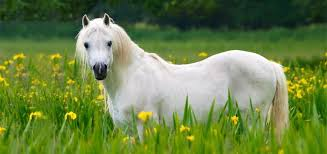
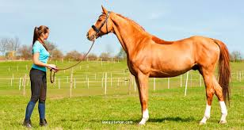
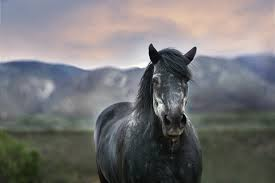
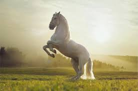
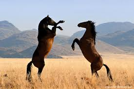
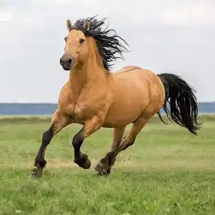

LE CHEVAL
L'animal qui relie l'homme aux origines
De la proie sauvage au compagnon noble

I. Présentation de l'Animal
Étymologie : CABALLUS
- Origine gallo-romaine : mauvais cheval, animal de trait
- Sens premier : labeur, utilité
- Classification scientifique : Équus ferus caballus (famille Équidés)
✦ Premières représentations ✦
- Lascaux (Préhistoire, 17 000-15 000 ans) - Cavalerie rocheuse
- Interprétation : proie sauvage, force indomptable, prestige de chasse
- Lien émotionnel : crainte révérencieuse mêlée d'admiration
- Autres sites : Chauvet, Altamira (représentation universelle)

II. Contes et Légendes du Monde
Pégase vs Kelpie : Deux Mondes
🕊️ PÉGASE (Grèce Antique)
- Origine : né du sang de Méduse
- Qui : cheval ailé divin, immortel
- Quoi : aide Bellérophon à vaincre la Chimère
- Symbole : Liberté, illumination, victoire
🌑 KELPIE (Folklore Écossais)
- Origine : esprits des lacs et rivières
- Qui : esprit démoniaque noir, métamorphe
- Quoi : attire et dévore les voyageurs imprudents
- Symbole : Danger, chaos, nature sauvage
↓ Réalités géographiques et culturelles → Perceptions inverses ↓
Autres exemples : Cheval de Troie (ruse), Hippogriffe (hybridité), Pouliche blanche (fantôme)

III. L'Animal au Moyen-Âge
Le Destrier Chevaleresque ⚔️
- Transformation radicale : de proie à compagnon valorisé
- Cheval de guerre : loyauté, bravoure, noblesse incarnées
- Destrier : formé au combat, coût équivalent à un château!
- Symbolisme chrétien : monture du Bien (contre le Mal)
📖 Bestiaire du Moyen-Âge
- Vision religieuse : cheval = fidélité divine, dévouement sans question
- Reflet du chevalier : statut social, honneur, lignée aristocratique
- Littérature courtoise : "Rocinante" (Amadis), "Bayard" (légende épique)
- Rupture majeure : de proie sauvage → compagnon héroïque

IV. L'Animal Aujourd'hui
Un Nouvel Âge d'Or Émotionnel
- Sport & Loisir : équitation olympique, saut, dressage, compétitions mondiales
- Thérapie émotionnelle : hippothérapie, connexion affective thérapeutique
- Film & Media : représentation nouvelle de l'intelligence équine
✦ Exemples Cinématographiques ✦
- « Cheval de Guerre » (Spielberg, 2011) : lien homme-animal dans l'horreur de guerre
- « L'Homme qui chuchotait » (Evans, 1998) : communication instinctive, guérison mutuelle
- « Spirit » (2002, DreamWorks) : liberté, indépendance, résistance
- « Black Beauty » : classique intemporel de l'empathie animale
⚠ Exception mondiale : Agriculture, travail, transport (pays en développement)

V. Biologie & Anatomie du Cheval
Une Machine Vivante Extraordinaire
📊 Caractéristiques Physiques
- Poids : 380-550 kg (adulte)
- Taille : 1.40m - 1.80m au garrot
- Longévité : 25-30 ans (record : 62 ans)
- Vitesse : 60-80 km/h au galop
🧠 Capacités Sensorielles
- Vision : 350° panoramique (sauf arrière)
- Audition : sons jusqu'à 25 kHz
- Odorat : 14× plus développé que l'humain
- Mémoire : Exceptionnelle, apprentissage rapide
💡 Aptitudes Cognitives
Les chevaux constituent des êtres émotionnels complexes : capacité à lire les émotions humaines, empathie, reconnaissance faciale, résolution de problèmes.

VI. Races & Diversité Mondiale
Plus de 300 Races Identifiées
- Chevaux de trait : Percheron, Trait Breton (puissance, 900kg+)
- Chevaux de selle : Pur-sang, Anglo-arabe (élégance, vitesse)
- Poneys : Shetland, Connemara (petite taille, robustesse)
- Chevaux régionaux : Lipizzan, Camargue, Islandais (patrimoine génétique)
🌍 Adaptations Régionales
- Climat/Terrain : Evolution selon environnement (chaleur, froid, montagne)
- Tempérament : Influence culturelle (élevage sélectif) et environnement
- Spécialisation : Course, dressage, saut, travail agricole, traction
- Génétique : Certaines lignées tracées depuis l'Antiquité

Conclusion
Synthèse : Le Cheval, Miroir de l'Humanité
- Préhistoire : fascination + crainte
- Légendes : allié divin ou démon
- Moyen-Âge : noblesse, chevalerie chrétienne
- Aujourd'hui : compagnon émotionnel
↓ Un lien constant ↓
Affection • Pouvoir • Spiritualité
